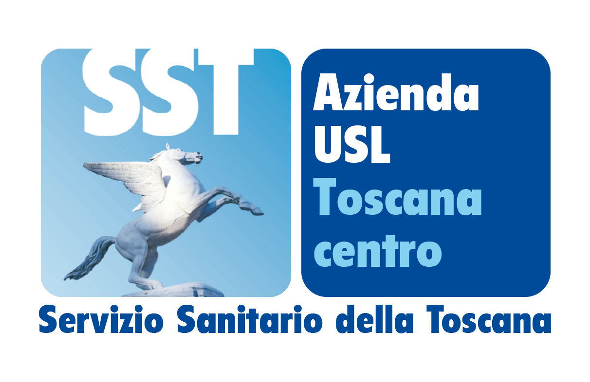

Scrivi le slide una per una, oppure incolla un testo e lascia che sia l'assistente a dividerlo. Alla fine copi il prompt già pronto e lo incolli nell'assistente AI, che prepara il file PowerPoint.
Passo 1
Più dettagli dai, meglio vengono le slide. Tutti i campi sono facoltativi.
Copertina

Allega questo file alla chat. Il prompt chiede di usarlo senza modificarlo.
⬇️ Scarica il logoPasso 2
Un modello sostituisce le slide e cambia qualche impostazione (tono, stile, quantità di testo). Argomento, pubblico, lingua e colore restano i tuoi. Le slide arrivano con il titolo e un suggerimento: scrivi il contenuto o eliminale.
Se nel testo vuoi una tabella, un grafico, un'immagine, una citazione o una nota del relatore, scrivilo dove deve comparire: per esempio una tabella in Markdown, oppure «qui un grafico a barre con questi dati: ...». Per le immagini scrivi il nome del file e allegalo alla chat.
Passo 3
Segui i passaggi: ogni spunta si accende quando hai fatto quello che serve.
Si aggiorna da solo mentre compili. Include le regole per evitare l'aspetto «fatto con l'AI». Puoi modificarlo come vuoi.